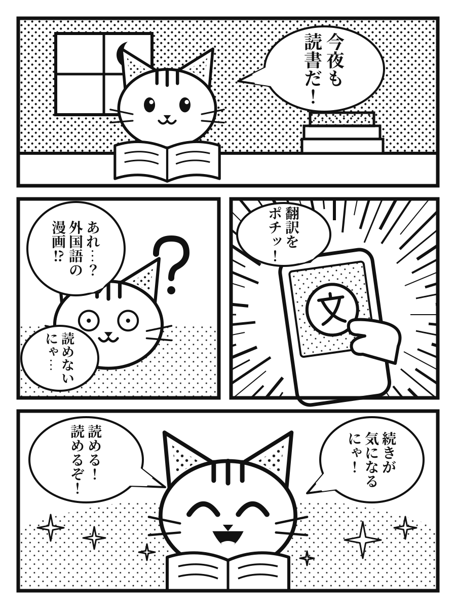
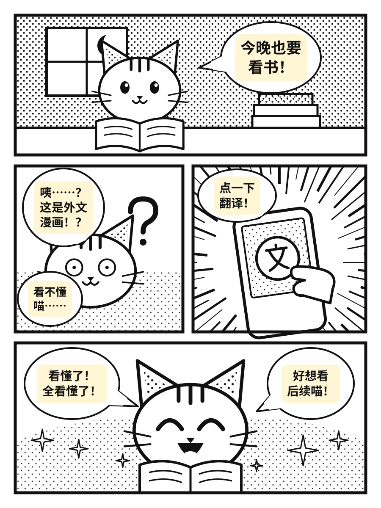
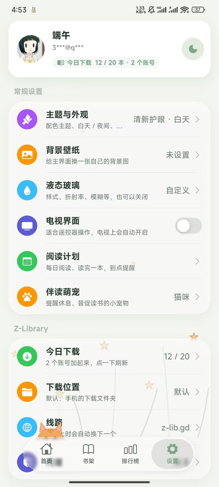
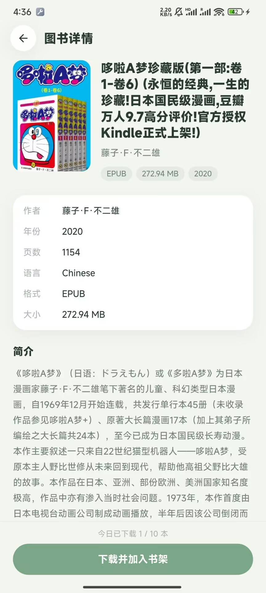

Venera
导入脚本源和源仓库，脚本声明的登录、设置项都能用。也能导入 .venera 备份，书架和观看记录一起带过来。
漫画翻译
不用切出应用，也不用另开词典。打开翻译后，译文一块块盖在原来的对话框上，画面还是那个画面。


译文 原文书源生态
抱走漫画本身不带任何内容，看什么由你决定。填一个仓库地址，或者导入旧应用的备份就行。
导入脚本源和源仓库，脚本声明的登录、设置项都能用。也能导入 .venera 备份，书架和观看记录一起带过来。
直接加载 APK 扩展，读取 keiyoushi 等扩展仓库。导入备份时，会按源 ID 自动装好对应的扩展。
安卓和 Mihon 共用同一套扩展，旧的 .tachibk 备份只合并、不覆盖，换过来不会弄丢现有书架。
导入 Legado 书源和网络仓库，几千个源也能排队搜索。文字、漫画、听书、短剧按类型分别打开，也支持 legado:// 一键导入。
APK 扩展依赖安卓系统，iOS 版没有 Mihon / Tachiyomi 扩展。扩展目前过不了 Cloudflare 的网页验证。
界面
圆角卡片、柔和配色，部分主题还带背景动画。底栏上趴着一只陪你读书的小猫。

Z-Library
登录你自己的 Z-Library 账号后，搜索页会多出一项。线路连不上时自动换下一个，EPUB、PDF、TXT 下载完自动导入书架。

还有这些
排版、主题、纸纹背景随心调，EPUB、TXT 都能导入。
阅读源里的音频、视频用自带播放器打开，安卓上听书可以锁屏控制。
专门的遥控器界面。手机扫码，就能把书源和书架同步到电视。
多套配色，白天夜间分开，换主题时有圆形扩散动画。
每日阅读、读完一本，到点提醒。小猫还会督促你休息。
漫画、小说、短剧都能下载，书架里的作品没网也能看详情。
本地备份一个文件带走，也能导入别的应用的备份，只合并不覆盖。
每个源、每组源都可以单独设代理，不用改系统网络。
下载
下载信息加载失败，请刷新页面重试。
iOS 版是未签名的 IPA，需要用 AltStore、Sideloadly 等工具自行签名后安装。